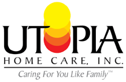

NOTICE OF PRIVACY PRACTICES
As Required by the Privacy Regulations Promulgated Pursuant to the Health Insurance Portability and Accountability Act of 1996 (HIPAA)
THIS NOTICE DESCRIBES HOW HEALTH INFORMATION ABOUT YOU MAY BE USED AND DISCLOSED, AND HOW YOU CAN GET ACCESS TO YOUR IDENTIFIABLE HEALTH INFORMATION
PLEASE REVIEW THIS NOTICE CAREFULLY
OUR COMMITMENT TO YOUR PRIVACY
Our organization is dedicated to maintaining the privacy of your identifiable health information. In conducting our business, we will create records regarding you and the treatment and services we provide to you. We are required by law to maintain the confidentiality of health information that identifies you. We are also required by law to provide you with this notice of our legal duties and privacy practices concerning your identifiable health information. By law, we must follow the terms of the notice of the privacy practices that we have in effect at the time.
To summarize, this notice provides you with the following important information:
The terms of this notice apply to all records containing your identifiable health information that are created or retained by our practice. We reserve the right to revise or amend our notice of privacy practices. Any revision or amendment to this notice will be effective for all of your records our practice has created or maintained in the past, and for any of your records we may create or maintain in the future. Our organization will post a copy of our current notice in our offices in a prominent location, and you may request a copy of our most current notice during any office visit.
IF YOU HAVE QUESTIONS ABOUT THIS NOTICE, PLEASE CONTACT:
The HIPAA Privacy Officer
Utopia Home Care Inc.
60 East Main Street
Kings Park, New York 11754
(631) 544-5077
WE MAY USE AND DISCLOSE YOUR HEALTH INFORMATION IN THE FOLLOWING WAYS:
1. Treatment
Our organization may use your identifiable health information to treat you. For example, we may ask you to undergo laboratory tests (such as blood or urine tests), and we may use the results to help us reach a diagnosis. Many of the people who work for our organization may use or disclose your identifiable health information in order to treat you or assist others in your treatment. Additionally, we may disclose your identifiable health information to others who may assist in your care, such as your hospital, physician, other agencies, therapists, spouse, children and/or parents.
2. Payment
Our organization may use and disclose your identifiable health information in order to bill and collect payment for the services and items you may receive from us. For example, we may contact your health insurer to certify that you are eligible for benefits (and for what range of benefits), and we may provide your insurer with details regarding your treatment to determine if your insurer will cover, or pay for, your treatment. We also may use and disclose your identifiable health information to obtain payment from third parties that may be responsible for such costs, such as family members. Also, we may use your identifiable information to bill you directly for services and items
3. Health Care Operations
Our organization may use and disclose your identifiable health information to operate our business and maintain our license and accreditation. As examples of the ways in which we may use and disclose your information for our operations, our organization may use your health information to evaluate the quality of care you received from us, or to conduct cost-management and business planning activities for our practice. Also, the Department of Health and accrediting bodies may access identifiable health information as needed. Additionally, in the event of an emergency or disaster situation, necessary medical information could be given to any governmental agency, supplemental provider agency, community volunteer service or any other provider of services.
4. Appointment Reminders
Our organization may use and disclose your identifiable health information to contact you and remind you of visits / deliveries.
5. Health-Related Benefits and Services
Our organization may use and disclose your identifiable health information to inform you of health-related benefits or services that may be of interest to you.
6. Release of Information to Family / Friends
Our organization may release your identifiable health information to a friend or family member that is helping you pay for your health care, or who assists in taking care of you.
7. Disclosure Required By Law
Our organization will use and disclose your identifiable health information when we are required to do so by federal, state or local law.
USE AND DISCLOSURE OF YOUR IDENTIFIABLE HEALTH INFORMATION IN CERTAIN SPECIAL CIRCUMSTANCES
The following categories describe unique scenarios in which we may use or disclose your identifiable health information:
1. Public health Risks
Our organization may disclose your identifiable health information to public health authorities that are authorized by law to collect information for the purpose of:
2. Health Oversight Activities
Our organization may disclose your identifiable health information to a health oversight agency for activities authorized by law. Over sight activities can include, for example, investigations, inspections, audits, surveys, licensure and disciplinary actions; civil, administrative, and criminal procedures or actions; or other activities necessary for the government to monitor government programs, compliance with civil rights laws and the health care system in general.
3. Lawsuits and Similar Proceedings
Our organization may use and disclose your identifiable health information in response to a court or administrative order, if you are involved in a lawsuit or similar proceeding. We may also disclose your identifiable health information in response to a discovery request, subpoena, or other lawful process by another party involved in the dispute, but only if we have made an effort to inform you of the request or to obtain an order protecting the information the party has requested.
4. Law Enforcement
We may release identifiable health information is asked to do so by a law enforcement official:
5. Serious Threats to Health or Safety
Our organization may use and disclose your identifiable health information when necessary to reduce or prevent a serious threat to your health and safety or the health and safety of another individual or the public. Under these circumstances, we will only make disclosures to a person or organization able to prevent the threat.
6. Military
Our organization may disclose your identifiable health information if you are a member of the U.S. or foreign military forces (including veterans) and if required by the appropriate military command authorities.
7. National Security
Our organization may use and disclose your identifiable health information to federal officials for intelligence and national security activities authorized by law. We also may disclose your identifiable health information to federal officials in order to protect the President, other officials or foreign heads of state, or to conduct investigations.
8. Workers’ Compensation
Our organization may release your identifiable health information for workers’ compensation and similar programs.
YOUR RIGHTS REGARDING YOUR IDENTIFIABLE HEALTH INFORMATION
You have the following rights regarding the identifiable health information that we maintain about you:
1. Confidential Communications
You have the right to request that our organization communicate with you about your health and related issues in a particular manner or at a certain location. For instance, you may ask that we contact you at home, rather than at work. In order to request a type of confidential communication, you must make a written request to the Privacy Officer, Utopia Home Care Inc., 60, East Main Street, Kings Park, New York 11754, (631) 544-5077, specifying the requested method of contact, or the location where you wish to be contacted. Our organization will accommodate reasonable requests. You do not need to give a reason for your request.
2. Requesting Restrictions
You have the right to request a restriction in our use or disclosure of your identifiable health information for treatment, payment or health care operations. Additionally, you have the right to request that we limit our disclosure of your identifiable health information to individuals involved in your care or the payment for your care, such as family members and friends. We are not required to agree to your request; however, if we do agree, we are bound by our agreement except when otherwise required by law, in emergencies, or when the information is necessary to treat you. In order to request a restriction in our use or disclosure of your identifiable health information, you must make your request in writing to the Privacy Officer, Utopia Home Care Inc., 60, East Main Street, Kings Park, New York 11754, (631) 544-5077. Your request must describe in a clear and concise fashion:
3. Inspection and Copies
You have the right to inspect and obtain a copy of the identifiable health information that may be used to make decisions about you, including patient medical records and billing records. You must submit your request in writing to the Privacy Officer, Utopia Home Care Inc., 60, East Main Street, Kings Park, New York 11754, (631) 544-5077, in order to inspect and/or obtain a copy of your identifiable health information. The agency will charge $.75 per page for copies of the medical record. Our practice may deny your request to inspect and/or copy in certain limited circumstances; however, you may request a review of our denial. Another licensed health professional chosen by us will conduct reviews.
4. Amendment
You may ask us to amend your health information if you believe it is incorrect or incomplete, and you may request an amendment for as long as the information is kept by or for our organization. To request an amendment, your request must be made in writing and submitted to the Privacy Officer, Utopia Home Care Inc., 60, East Main Street, Kings Park, New York 11754, (631) 544-5077. You must provide us with a reason that supports your request for amendment. Our organization will deny your request if you fail to submit your request (and the reason supporting your request) in writing. Also, we may deny your request if you ask us to amend information that is:
5. Accounting of Disclosures
All of our patients have the right to request an "accounting of disclosures". An "accounting of disclosures" is a list of certain disclosures our organization has made of your identifiable information. In order to obtain an accounting of disclosures, you must submit your request in writing to the Privacy Officer, Utopia Home Care Inc., 60, East Main Street, Kings Park, New York 11754, (631) 544-5077. All requests for an "accounting of Disclosures" must state a period of time that may not be longer than six (6) years and may not include dates before April 14, 2003. The first list you request within a twelve (12) month period is free of charge, but our practice may charge you for additional lists within the same twelve (12) month period. Our organization will notify you of the costs involved with additional requests, and you may withdraw your request before you incur any costs.
6. Right to a Paper Copy of This Notice
You are entitled to receive a paper copy of our notice of privacy practices. You may ask us to give you a copy of this notice at any time. To obtain a paper copy of this notice, contact the Privacy Officer at (631) 544-5077.
7. Right to File a Complaint
If you believe your privacy rights have been violated, you may file a complaint with our organization or with the Secretary of the Department of Health and Human Services. To file a complaint with our organization, contact the Privacy Officer, Utopia Home Care Inc., 60, East Main Street, Kings Park, New York 11754, (631) 544-5077. All complaints must be submitted in writing. You will not be penalized for filing a complaint.
8. Right to provide an Authorization for Other Uses and Disclosures
Our organization will obtain your written authorization for uses and disclosures that are not identified by this notice or permitted by applicable law. Any authorization you provide to us regarding the use and disclosure of your identifiable health information may be revoked at any time in writing. After you revoke your authorization, we will no longer use or disclose your identifiable health information for the reasons described in the authorization. Please note, we are required to retain records of your care.